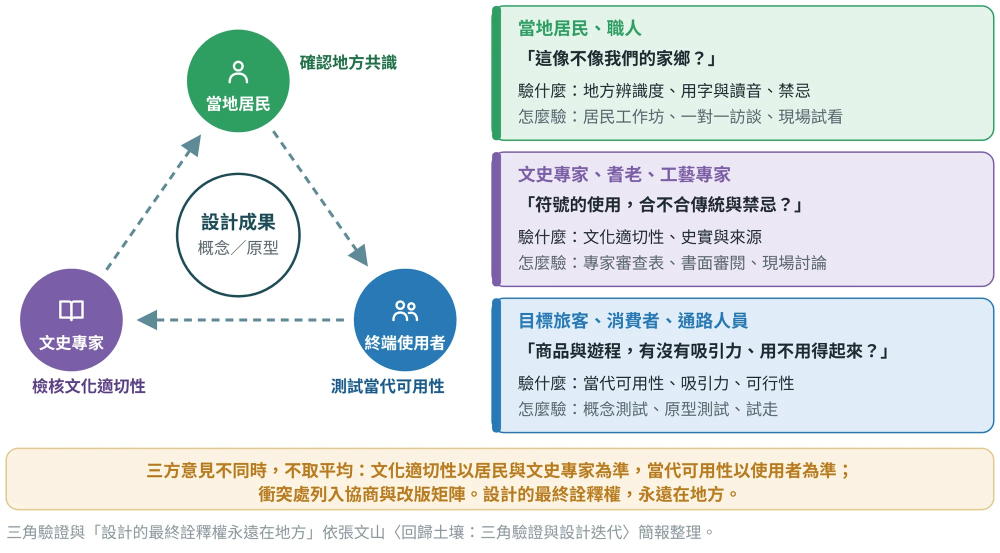
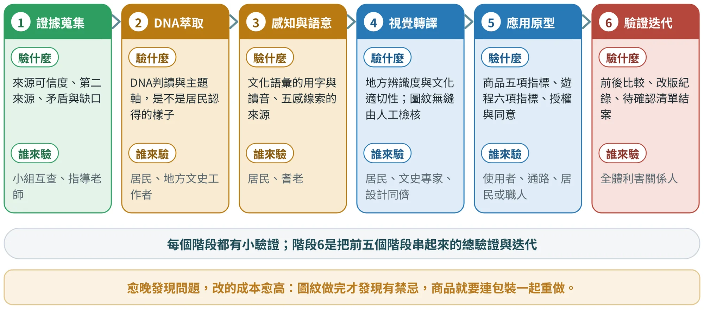
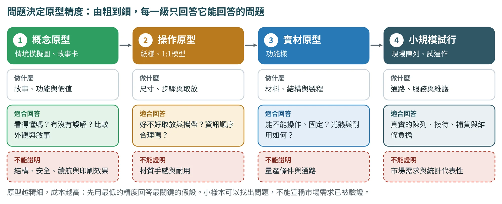
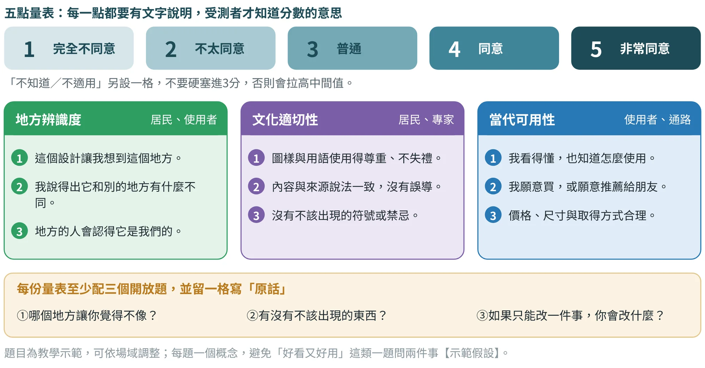
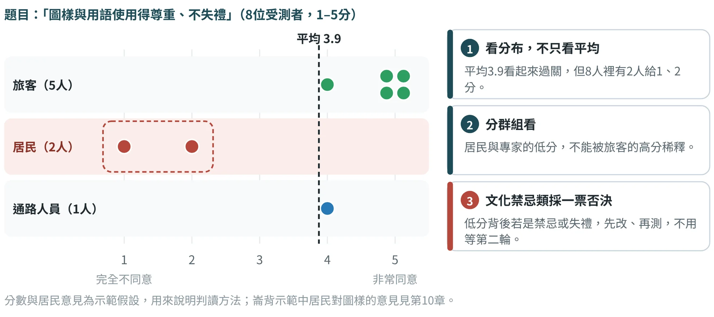
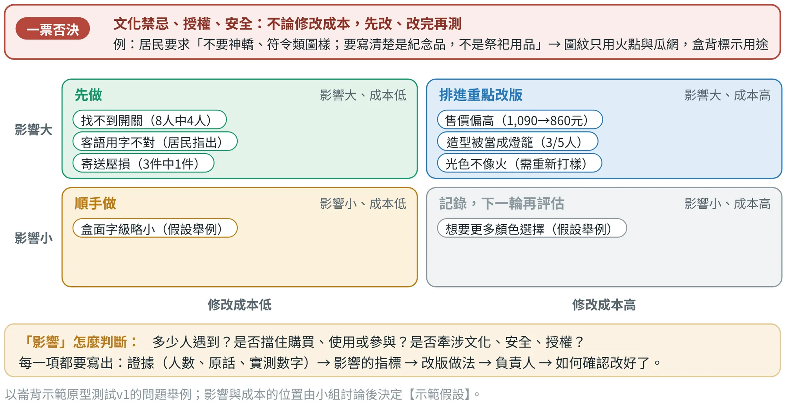
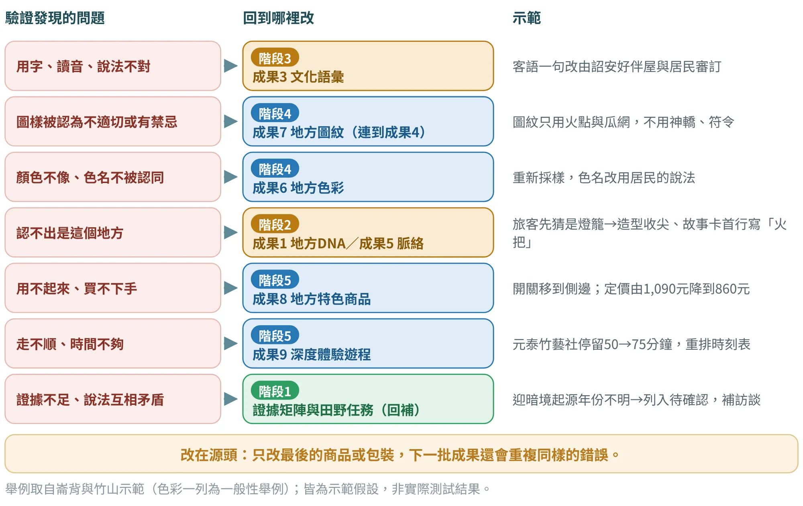

驗證與迭代
讓居民、專家與使用者檢查設計，並把意見變成可追溯的改版
12.1驗證是整條轉譯鏈的校準#
「先研究、再萃取、後轉譯、最後驗證」的最後一步，並不是把前面做好的東西交出去給人打分數。轉譯是把地方意義變成色彩、圖紋、商品與遊程，每一步都可能走偏：DNA判讀偏了，色彩就偏；用字不對，故事卡就失禮；圖樣踩到禁忌，整個商品都不能用。驗證的任務是在成果交出去之前，找出這些偏差，並且找得出「偏在哪一個上游成果」。
本書採用「三角驗證」：當地居民確認地方共識，文史專家檢核文化適切性，終端使用者測試當代可用性，三方各自回答不同的問題，缺一不可（圖12.1）。
三個常見的誤解要先釐清：
- 驗證不是民意調查。 目的是找出問題與判斷方向，樣本小、題目少是常態，不需要也不應該做統計推論。
- 驗證不是找人背書。 不能只問「你喜歡嗎」，也不能只找熟人；要讓不同立場的人有機會說「不像」。
- 驗證不是做一次就結束。 每個階段都有小驗證，階段6把前五個階段串起來做總驗證，改完還要再測一次。
以人為本的設計方法，同樣把「用原型向真實的人取得回饋，再修改」視為核心做法〔文4〕。本書在此之外多加一條：地方的人不只是受測者，也是文化意義的詮釋者。

12.2驗什麼：三個問題、四套量尺#
每一份成果都要回答三個問題：地方辨識度（這像不像我們的家鄉？）、文化適切性（符號的使用，合不合傳統與禁忌？）、當代可用性（商品與遊程是否具備吸引力、用不用得起來？）。三個問題不是同時要在每個階段回答：階段1–3主要驗證證據與語意是否站得住，階段4驗證辨識度與適切性，階段5加上可用性，階段6做前後比較與總結（圖12.2）。

本書前面幾章出現過幾套量尺：驗證階段的四類判準（真實性、文化適切性、吸引力、可行性）、商品的五項指標、遊程的六項指標。它們不是各說各話，而是同一組問題在不同成果上的具體化（表12.1）。
| 驗證問題 | 四類判準 | 商品五項指標（第10章） | 遊程六項指標（第11章） |
|---|---|---|---|
| 地方辨識度 | 真實性 | 地方性（×3） | 地方深度（×2） |
| 文化適切性 | 文化適切性 | 地方性（含禁忌與授權檢查） | 地方深度、社區受益（含同意與授權） |
| 當代可用性 | 吸引力、可行性 | 實用性、吸引力、可行性、永續性 | 流暢性、時間合理性、感官豐富度、可及性 |
對照由本書整理，用意是讓同一個問題在不同階段用同一個說法；實際作業以各章指標與權重為準。
文化適切性有一個特別的規則：它不是「分數愈高愈好」的指標，而是門檻。居民或專家認為失禮、有禁忌或未經授權的內容，不論其他人給幾分，都不能通過（12.5節說明處理方式）。
12.3誰來驗：三種受測者與一頁驗證計畫#
受測者要涵蓋三種立場。崙背商品示範的原型測試配置為旅客5人、居民2人、通路人員1人，第二輪保持同樣組成、旅客換為新受試者；竹山遊程示範則由4–10人試走。這些人數是教學示範的規模示範假設：小樣本適合找出問題，不適合推算比例；重要的是三種立場都在場，並且每一輪的組成可以比較（表12.2）。
| 對象 | 驗什麼 | 怎麼驗 | 注意事項 |
|---|---|---|---|
| 居民與職人 | 地方辨識度、用字與讀音、禁忌與用途 | 居民工作坊、一對一訪談、把成果放在現場請他們看 | 用他們的話記錄；不可只問一位；結果回饋給社區 |
| 文史專家、耆老、工藝專家 | 文化適切性、史實與來源、工藝是否被誤用 | 專家審查表、書面審閱、小型討論 | 請專家寫出依據；意見不同時並列，不替他們取捨 |
| 目標旅客、消費者 | 看得懂、想不想買或參加、價格與使用 | 概念測試、原型測試、遊程試走 | 找真正的目標客群，不找同組同學充數；不誘導給高分 |
| 通路與服務人員 | 可行性：進貨、陳列、接待、運送、成本 | 通路訪談、試擺或試運作 | 請他們指出最可能出問題的一環 |
每一次驗證前，先寫一頁驗證計畫，讓整個團隊對「要驗什麼、怎麼判斷、結果怎麼用」有共識（表12.3）。
| 項目 | 要寫什麼（示範） |
|---|---|
| 驗證目的 | 找出火把小夜燈原型在地方辨識度、實用性、吸引力、可行性與永續性的問題 |
| 驗證階段與版本 | 階段5 → 6；原型v1（手工竹編燈罩、彩色印刷盒、紙漿內襯、雙面彩印故事卡） |
| 受測者與人數 | 旅客5人、居民2人、通路人員1人；第二輪組成相同、旅客換人 |
| 測試物與流程 | 先看外觀並說出第一印象 → 說明用途後再看 → 操作與開箱 → 填量表與開放題 |
| 量表與題目 | 五項指標與購買意願（1–5分）、地方共識三題；三個開放題並留「原話」欄 |
| 倫理與同意 | 說明目的並取得同意；照片與錄音須同意；不誘導給高分；保留不同意見 |
| 判讀規則 | 分群組看分布；文化禁忌、授權與安全意見一票否決；高優先項目改完要再測 |
| 結果用途 | 產出改版矩陣；依回流規則回到上游成果修改；結果回饋給居民與專家 |
範本見附錄A「12人機協作成果驗證表」與各成果的概念或原型測試紀錄表；本頁計畫可直接複製使用。
原型要做到多精，才能回答這個問題
測試之前，先決定要用哪一級的原型。原型的精度要跟著問題走：想知道故事能不能被理解，一張故事卡與情境模擬圖就夠；想知道包裝能不能攜帶，要用1:1的紙樣讓人真的裝進常用的包袋；想知道燈具的光熱與耐用，就必須有能操作的功能樣（圖12.3）。

情境模擬圖（包括AI生成的概念圖）適合比較外觀與敘事，卻不能證明結構、安全、續航或印刷效果，也不能取代實物測試。每個原型都要在測試紀錄裡寫明它的精度，讀的人才知道結論能走多遠。
測試計畫的核心，可以濃縮成六件事：假設、對象、任務、觀察指標、通過條件，以及失敗之後的行動（表12.3有更完整的版本）。通過條件要盡量在測試之前訂好；若事後修改，要說明理由。課堂可以先用小樣本找出問題，但不能因此宣稱市場需求已被驗證，或具有統計代表性。
12.4怎麼問：量表、題目與開放意見#
量表採用五點制，每一點都附文字說明，受測者才知道分數的意思；「不知道」另設一格。題目依三個驗證問題各出三題，每題只問一個概念，並且用受測者聽得懂的白話（圖12.4）。

寫題目有四個要點：
- 一題一概念。「好看又好用」要拆成兩題，否則受測者答不出分數。
- 不暗示答案。 問「這個設計是否傳達了竹編的精神」就是誘導；改問「看到它，你想到什麼？」
- 先自由回答，再給量表。 先請受測者說第一印象，再說明用途，避免被說明影響判斷；崙背示範中「5位旅客有3人先猜是燈籠」，就是先看後說明才得到的證據。
- 留下原話。 分數告訴你「有問題」，原話告訴你「什麼問題」。例如「亮是亮，但不像火」直接指向光色，這句話比一個3分有用得多。
每個測試，都要先想好它能得到什麼結論
同一個分數，可能來自不同原因：可行性低，可能是成本、產能或操作；地方性低，可能是不認得來源，也可能是認得卻覺得不適切。所以每個重要的分數，都要附上觀察或原話。表12.4列出五種常見的測試問題，並寫明每一種測試可以得到、不能得到的結論。
| 測試問題 | 任務與指標 | 可得到的結論 |
|---|---|---|
| 故事是否看懂 | 看過卡片後，自行回述地方的關係 | 找出理解與誤解；不等於文化正確 |
| 開關是否好找 | 不提示操作，記錄時間與錯誤次數 | 檢查介面與說明；不等於電器安全 |
| 包裝是否適合 | 實際取放、攜帶、拆裝 | 發現結構與流程的問題 |
| 方案是否適切 | 請地方角色自由回應，再討論設計意圖 | 呈現分歧與修改方向 |
| 價格是否合理 | 與替代品比較，並放進實際購買情境 | 探索接受範圍；不以購買意願代替銷量 |
12.5怎麼讀：平均、分布與少數意見#
整理資料時，最容易犯的錯是只算平均。圖12.5用一個假設的題目說明：8位受測者的平均是3.9分，看起來過關，但兩位居民給了1分與2分。把居民與旅客混在一起算平均，旅客的高分就稀釋了居民的警訊。

判讀分數有三道步驟：
- 先看分布，再看平均。 每題畫出每位受測者的分數，找出離群的點。
- 分群組看。 旅客、居民、專家、通路各自的平均與分布分開列出；兩群組的分數差達2分以上，列為「分歧」，進入討論。
- 少數意見先保留。 只有一個人說的意見不能因為「沒有共識」就刪掉；它可能是唯一知道內情的人。不刪除，標註人數，由小組與居民或專家共同判斷。
12.6改版矩陣：從意見到行動#
整理完意見之後，要把它們轉成改版矩陣。每一列包含：問題、證據（人數、原話、實測數字）、影響的指標、改版做法、優先順序、負責人與確認方式。優先順序用兩個條件判斷：影響多大、修改成本多高；牽涉文化禁忌、授權或安全的，直接列為一票否決（圖12.6）。

表12.5以崙背原型測試v1的問題為例，列出完整的改版矩陣欄位。請注意，「確認方式」這一欄決定改版有沒有被證明有效：不是改了就算數，而是在下一輪測試中，用同樣的題目或觀察重新確認。
| 問題 | 證據 | 影響指標 | 改版做法 | 優先 | 確認方式 |
|---|---|---|---|---|---|
| 圖樣與用途 | 居民：不要神轎、符令；要寫清楚不是祭祀用品 | 地方性 | 圖紋只用火點與瓜網；盒背標示「紀念品，非祭祀用品」 | 高（一票否決） | 請居民與崇賢寺確認；v2再問居民 |
| 找不到開關 | 8人中4人找不到 | 實用性 | 開關移到側邊並加凹點 | 高 | v2操作測試，找不到者降為0 |
| 客語用字不對 | 「拼音看不懂」；居民指出用字不對 | 地方性 | 由詔安好伴屋與居民審訂，拼音旁加華語，音檔放QR待確認 | 高 | 居民書面確認用字與讀音 |
| 售價偏高 | 「一千多有點貴，八百多可以考慮」 | 可行性 | 簡化編法、單色印刷、改小電池，定價860元 | 高 | v2購買意願與價格接受度 |
| 光色不像火 | 「亮是亮，但不像火」 | 吸引力 | 改偏橘的暖光，加大編孔待確認 | 中 | v2打樣後旅客評分 |
| 寄送壓損 | 試寄3件中1件壓損 | 可行性 | 內襯卡位並加燈罩護套 | 中 | 改版後重新試寄 |
原型測試的完整紀錄與評分見第10章；本表補充了優先順序與確認方式兩欄。
12.7回流：問題回到哪個階段改#
改版最容易犯的錯，是只在最後一個成果上修修補補。問題的根源常在上游：旅客認不出是這個地方，可能是DNA或脈絡判讀偏了；客語用字不對，要回到文化語彙；圖樣有禁忌，要回到圖紋與設計語彙。圖12.7列出七種常見問題與回流位置。

回流時要注意一件事：上游一改，下游可能要跟著改。圖紋的使用規則改了，商品包裝與遊程導覽摺頁都要檢查；色名改了，故事卡與數位導覽的文字也要同步。所以每次回流後，要回到附錄C的各階段檢核表與「地方視覺系統一致性檢核表」（範本14），確認全部成果仍然說同一個故事。
12.8前後比較與迭代紀錄#
改版之後，用同樣的題目、同樣的組成再測一次，才能比較。崙背示範的加權總分由36.4分提高到41.6分，購買意願由3.2提高到4.0；竹山遊程示範的路線評分由24分提高到28分（滿分35）。這些數字都是教學示範的假設值，作用是示範如何呈現前後差異，不是方法有效的證明示範假設。
比較v1與v2時，要同時說明受試者是否相同、任務是否一致，以及兩版原型有哪些差異。若換了不同的受試者，分數變高不一定全由設計造成；若同一批人重複測試，也可能有熟悉效果。課堂中的改版可以用這些數字找方向，但不要過度宣稱因果或「顯著提升」。
每一輪都要留下迭代紀錄，讓別人看得懂「改了什麼、為什麼改、結果如何」（表12.6）。
| 版本 | 時間 | 改了什麼 | 依據的證據 | 結果與決策 |
|---|---|---|---|---|
| 崙背v1 | 8月 | 手工竹編燈罩、彩色印刷盒、紙漿內襯、雙面彩印故事卡 | ——（初版） | 加權36.4；購買意願3.2；進入改版 |
| 崙背v2 | 9月中至11月初 | 簡化編法、單色印刷、瓦楞紙卡內襯與護套、側邊開關、偏橘暖光 | 表12.5列出的六項問題 | 加權41.6；購買意願4.0；續測 |
| 竹山 試走一 | —— | 依初版時刻表走完全程，記錄各站實測時間 | 元泰竹藝社計畫50分、實測75分 | 路線評分24；調整停留時間與午餐安排 |
| 竹山 試走二 | —— | 重排時刻表，增加備援與帶回家完成的做法 | 試走一的實測數字與旅客原話 | 路線評分28；可及性（停車）仍待解決 |
什麼時候可以停止迭代？沒有放諸四海皆準的答案，但可以先約定三個停止條件：①沒有未解決的一票否決項目；②高優先項目都改過並通過再測；③剩餘問題已列入「待確認」與下一輪任務，並寫明負責人。資源有限而問題沒有解決時，要誠實寫在成果裡，而不是假裝已經完成。
最後，把驗證的結果帶回地方。給居民與專家看改版後的成果，說明他們的意見改變了什麼、沒有採用的意見為什麼不採用。這既是倫理，也是下一輪驗證能被信任的基礎。
12.9AI協作：彙整與編碼可以，替受測者回答不行#
AI適合做三件事：彙整量表分數與分布、把開放意見逐筆編碼、依規則草擬改版矩陣。它不能做的事更重要：不能虛構受測者的回饋，不能替居民或專家判定文化適切，也不能宣告「已經改好了」。用AI扮演的「虛擬使用者」所給的意見，可以作為設計時的思考提示，但不能當作驗證證據。
根據我提供的量表分數與開放意見：【貼上，註明每筆來自旅客、居民、專家或通路人員】，整理：①各題平均與分布（分群組呈現）；②共通問題與分歧；③依「地方辨識度／文化適切性／當代可用性」分類；④產出高／中／低優先的改版矩陣：問題｜證據（人數或原話）｜影響指標｜建議改版｜建議回流階段。保留少數意見，不自行刪除離群回饋；涉及文化禁忌、授權或安全的意見一律標「一票否決」；資料不足處標「待確認」，不要補寫不存在的回饋。
提示詞依張文山〈地方DNA設計轉譯〉階段6「驗證迭代」的AI協作設計整理；第三版-2提示詞原文見附錄B。
依以下成果與測試目的：【貼上：成果類型、目前階段、受測者類型與人數】，起草一頁驗證計畫與量表題目：每個驗證問題三題、每題只問一個概念、五點量表附文字說明、三個開放題，另列同意說明與「不誘導」的提問提醒。題目只是草稿，須經小組與居民或專家審閱後才能使用。
請把以下開放意見逐筆編碼：【貼上，保留原話與受測者代號】。每筆標註：主題｜指向的成果（成果1–9）｜情緒（正向／中性／負向）。編碼後列出各主題的筆數與代表原話，另列「只有一人提到」的意見，不得合併或刪除；不要替受測者推測沒說出口的想法。